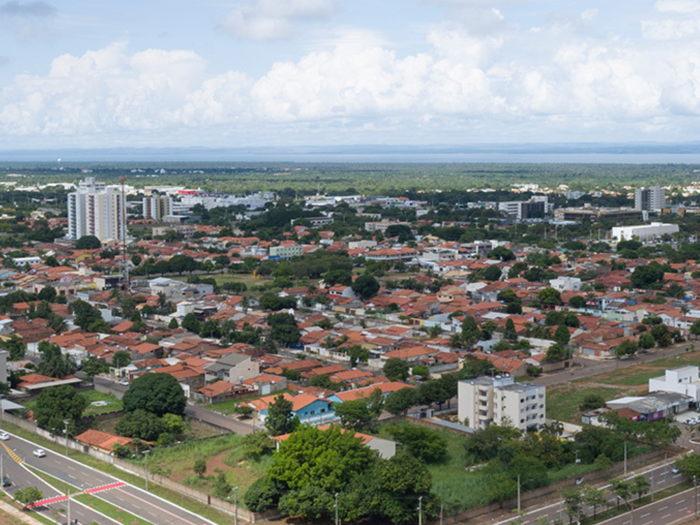

O Tocantins é o mais jovem estado brasileiro, instalado em 1989 após ser emancipado de Goiás. Localizado na Região Norte, possui cerca de 1,6 milhão de habitantes e é famoso pelo ecoturismo, com destaque para as belezas naturais do Parque Estadual do Jalapão e da Ilha do Bananal
